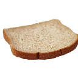

Currently, these are only the emojis currently in use, all the deleted ones are underway!
Also, this is a Lot of images, so your it might take a while to load it all
mute ante li pali e lipu ni

:83c:
- first use: 15/7/23

:Angery:
- first use: 27/12/22

:__:
- first use: 5/9/23

:a_:
- first use: 29/6/22

:augh:
- first use: 19/11/23
:beast:
- first use: 7/12/23
:biblically_accurate_sob:
- first use: 20/8/23
:bingus:
- first use: 22/7/22
:blood_type_h:
- first use: 21/9/22
:blunder:
- first use: 10/9/23

:bread:
- first use: 24/9/23
:brilliant:
- first use: 10/9/23
:ca:
- first use: 10/9/23
:canihavemod:
- first use: 11/7/23
:catboom:
- first use: 9/9/23
:catponder:
- first use: 25/6/22
:concerning:
- first use: 26/8/22
:dab:
- first use: 26/6/22
:davestrider:
- first use: 21/8/23
:deepfriedwhat:
- first use: 23/6/23
:despair:
- first use: 25/6/22